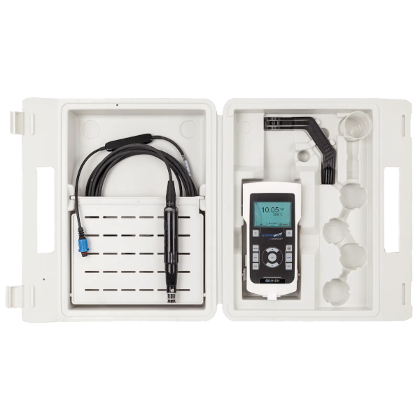

Sonda Oxigénio Dissolvido VWR pHenomenal OX 4110 H

| Sonda VWR pHenomenal OX 4110 H | |
|---|---|
| Localização: | Lab. 1.87 Edf. 7 |
| Responsável: | Margarida Ramires |
| Operador: | Utilizador |
| Princípio de Funcionamento: | Sensores |
| Fabricante: | VWR International |
| Modelo: | OX 4110 H |
| Tipo: | Oximetro |
| Website: | VWR International |
Oxímetro portátil VWR pHenomenal OX 4110 H, concebido para a medição de oxigénio dissolvido e temperatura em amostras de água e outros ambientes aquáticos. O equipamento utiliza uma sonda ótica de oxigénio OPOX 11-3, com sensor de temperatura integrado, permitindo realizar medições precisas e de elevada resolução em aplicações laboratoriais e de campo. A construção robusta com classificação IP67 e a alimentação por pilhas tornam o equipamento particularmente adequado para trabalhos de monitorização ambiental e campanhas de amostragem.
O sistema permite medir a concentração de oxigénio dissolvido até 50 mg/L, a saturação de oxigénio e a temperatura, incluindo compensação automática de temperatura e compensação manual da salinidade. Dispõe ainda de registo de dados, diagnóstico do sensor, ligação USB à prova de água e funcionalidades de suporte a GLP, facilitando a documentação e rastreabilidade das medições.
Calendário / Disponibilidade
RequisitarPrincipais Aplicações
- Monitorização da qualidade da água;
- Medição de oxigénio dissolvido em águas marinhas e continentais;
- Estudos de rios, lagos, estuários e águas costeiras;
- Monitorização ambiental e de ecossistemas aquáticos;
- Controlo de condições de oxigenação em sistemas aquáticos;
- Estudos de processos de degradação e consumo de oxigénio;
- Monitorização de águas em laboratório e no campo;
- Caracterização de condições físico-químicas de massas de água;
Tipos de Amostra
- Água do mar;
- Água estuarina;
- Água doce;
Principais Vantagens:
- Sonda ótica de oxigénio para medições de elevada precisão;
- Medição simultânea de oxigénio dissolvido e temperatura;
- Elevada precisão de medição de oxigénio, até ±0,1 mg/L ou ±1%;
- Compensação automática da temperatura;
- Compensação manual da salinidade até 35 ppt;
- Carcaça robusta com classificação IP67;
- Registo automático de até 5000 conjuntos de dados;
- Intervalo de registo configurável entre 1 minuto e 1 hora;
- Diagnóstico avançado e controlo de deriva do sensor;
- Ligação USB bidirecional à prova de água;
- Mais de 1000 horas de funcionamento com 4 pilhas AA;
- Design portátil adequado para utilização em campo;
- Funcionalidades de suporte a princípios GLP;
Específicações Técnicas:
| Específicação | Valor |
|---|---|
| Fabricante | VWR International |
| Modelo | OX 4110 H |
| Precisão DO | ±0,1 mg/L ou ±1% |
| Concentração DO | 0,00 - 20,00 / 0 - 50 mg/L |
| Resolução de Concentração DO | 0,1%; 0,01 mg/L |
| Saturação DO | 0 - 200/200 - 500 % |
| Faixa de pressão barométrica DO | 500 - 1100 mbar |
| Intervalo de Temperatura | 0,0...+50,0 °C |
| Compensação de Temperatura | 0 to +50 °C (automático) |
| Calibração pelo Utilizador | Sim |